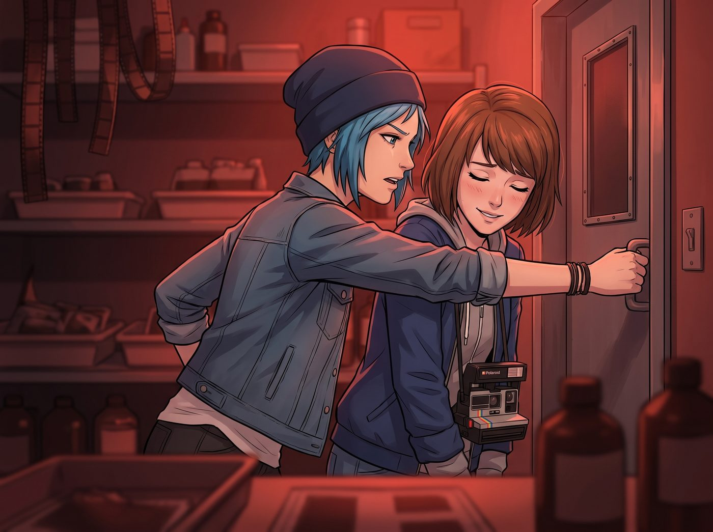

硬核浪漫的物理破壞力

暗房裡的紅光溫柔地包裹著兩人。Chloe 剛說完那句堪稱滿分的直球情話，氣氛已經烘托到了完美的頂點。Max 閉上眼睛，嘴角帶著一絲羞澀的笑意，等著那個帶著薄荷與菸草味的吻進一步加深。
為了讓這個難得的浪漫時刻更具電影感，Chloe 決定耍個帥。她伸出一隻手，試圖霸道地攬住 Max 的腰，將她順勢帶向旁邊，準備來一個極具張力的門板壁咚。
這本該是一個標準且迷人的愛情電影橋段。
一、竹竿的暗算
然而，Chloe 顯然高估了自己大腦對肢體的精細控制力，也完全忘記了自己腳上穿著的是一雙沾過機油、極其笨重的鋼頭馬汀靴。
就在她瀟灑轉身的瞬間，靴子厚重的鞋底精準地踩到了地上一根原本用來掛相紙的廢棄細竹竿。
「哇喔——！」
伴隨著一聲極度破壞氣氛的慘叫，藍領機械師的重心瞬間崩塌。為了不讓自己龐大的身軀把脆弱的攝影師壓成肉餅，Chloe 在半空中展現出了驚人的核心力量，她猛地扭轉身體，雙手胡亂在空中亂抓，試圖尋找支撐物。
好死不死，她一把拽住了暗房門的下壓式金屬門把。
「喀噠」一聲脆響，原本就沒鎖死的暗房門被巨大的重力瞬間扯開。
沒有唯美的壁咚，也沒有繾綣的擁吻。Chloe 像一顆失控的藍色保齡球，抱著 Max 直接從暗房裡摔了出來。兩個人在起居廂那塊昂貴的波斯地毯上滾作一團，發出一聲沉悶的巨響，最終摔成了一個四肢交纏、極其狼狽的人形麻花。
二、目擊者的判決
巧合的是，Victoria 此時正端著一杯 Kate 剛泡好的伯爵茶，準備走回自己的房間。
聽到巨響，名媛停下腳步。她低頭看著腳邊這兩個在地上痛得倒吸冷氣的傢伙，杯子裡的紅茶甚至連一滴都沒有灑出來。
空氣在這一秒陷入了死寂。
「我讓妳進去哄她，沒讓妳們在我的客廳裡表演無差別格鬥的美式摔角。」Victoria 居高臨下地看著她們，挑起了一邊修長的眉毛，語氣冷得像西雅圖的冬雨，「Price，妳的求偶儀式已經退化到需要靠腦震盪來完成的哺乳動物早期階段了嗎？」
三、碎成渣渣的醋意
被 Chloe 死死護在懷裡、當了肉墊的 Max 毫髮無傷，只是原本戴得好好的黑框眼鏡徹底歪到了鼻樑下面。
她抬起頭，看著把自己摔得呲牙咧嘴、後腦勺還撞到沙發腳，卻依然在第一時間緊張地摸著她的手臂問「妳沒受傷吧？相機沒壓到吧？」的藍領笨蛋。
那點殘存的醋意，以及剛才在暗房裡好不容易建立起來的粉紅浪漫濾鏡，瞬間碎成了一地搞笑的渣渣。
「噗……」Max 的肩膀開始劇烈地抖動。
她原本想裝出生氣的樣子，但看著 Chloe 頂著一頭被靜電弄得像鳥巢一樣的亂髮、滿臉驚恐又委屈的蠢樣，Max 終於徹底破功了。她趴在 Chloe 的胸口，笑得眼淚都飆了出來，一邊笑一邊用拳頭無力地捶著 Chloe 的肩膀：
「妳這個……破壞氣氛的白痴！我的純愛電影被妳硬生生演成了成龍的動作喜劇！」
「這能怪我嗎？！是那根竹竿暗算我！」Chloe 揉著撞痛的後腦勺，死鴨子嘴硬地大聲抗議，試圖挽回自己蕩然無存的帥氣形象，「再說了，這叫硬核浪漫！大富婆懂個屁！這說明我對妳的愛具有強大的物理破壞力，連地心引力都攔不住我！」
「妳對我的地毯確實造成了強大的破壞力。」
Victoria 嫌棄地翻了個巨大的白眼，但看著地上笑得喘不過氣的 Max，她知道這場吃醋風波已經被這隻藍毛狒狒用一種極其弱智卻有效的方式徹底化解了。
名媛優雅地跨過這兩具還在地上拉扯的屍體，頭也不回地走向房間，甩下最後的判決：
「給妳們三分鐘時間，把地上的灰塵清理乾淨，然後把自己從我的視線裡移開。否則我明天就把妳們兩個一起打包丟進太平洋餵鯊魚。」
四、繼續的吻
「聽見沒，Caulfield？」Chloe 躺在地毯上，雖然摔得渾身酸痛，但看著重新展露笑顏的 Max，她咧開嘴，露出了一個無比燦爛且釋懷的痞笑，「警報解除了，大富婆赦免我們了。所以，剛才暗房裡那個沒完成的吻，我們現在是要在波斯地毯上繼續，還是等我先去拿個冰袋敷一下頭？」
Max 笑著摘下歪掉的眼鏡，輕輕揪住 Chloe 破洞T恤的衣領，在一陣夾雜著無奈與甜蜜的笑聲中，主動低頭吻了上去。